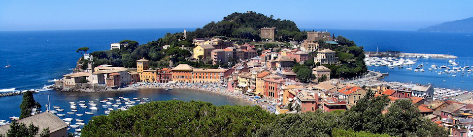

CONVEGNO ITALO-FRANCESE – ATELIER ITALO-FRANÇAIS |

Il convegno ha lo scopo di stimolare discussioni e possibili collaborazioni tra studiosi italiani e francesi sui seguenti temi: algoritmi per ottimizzazione convessa e le inclusioni monotone, metodi del punto fisso, teoria dei giochi, interazioni tra dinamiche discrete e continue, teoria dell'apprendimento statistico, analisi di grandi aggregazioni di dati, problemi inversi.
Le but de ce colloque est de stimuler les discussions et de favoriser la création de nouvelles collaborations entre chercheurs italiens et français sur les thèmes suivants: algorithmes pour l'optimisation convexe et les inclusions monotones, méthodes de point fixe, théorie des jeux, interactions entre dynamiques discrètes et continues, théorie de l'apprentissage statistique, traitement de masses de données, problèmes inverses.
Partecipanti – Participants | Programma – Programme | Comitato scientifico – Comité scientifique | Organizzatori – Organisateurs | Hotel
Hédy Attouch (Université Montpellier 2)
Francis Bach (INRIA et École Normale Supérieure de Paris)
Michel Barlaud (Université de Nice)
Alberto Bemporad (Istituzioni Mercati e Tecnologia, Lucca)
Jérôme Bolte (Université Toulouse 1)
Silvia Bonettini (Università di Ferrara)
Giuseppe Calafiore (Politecnico di Torino)
Raffaello Camoriano (Università di Genova e Istituto Italiano di Tecnologia)
Antonin Chambolle (École Polytechnique)
Thierry Champion (Université de Toulon)
Alessandro Chiuso (Università di Padova)
Émilie Chouzenoux (Université Paris-Est)
Vittorio Colao (Università della Calabria)
Patrick Combettes (Université Pierre et Marie Curie)
Roberto Cominetti (Santiago)
Ernesto De Vito (Università di Genova)
Jalal Fadili (ENSI Caen)
Cédric Fevotte (Laboratoire Lagrange, CNRS, Nice)
Guillaume Garrigos (Université Montpellier 2)
Ilaria Giulini (École Normale Supérieure de Paris)
Roberto Lucchetti (Politecnico di Milano)
Quang Van Nguyen (Université Pierre et Marie Curie)
Jean-Christophe Pesquet (Université Paris-Est)
Michele Piana (Università di Genova)
Massimiliano Pontil (UCL e Istituto Italiano di Tecnologia)
Nelly Pustelnik (CNRS, École Normale Supérieure de Lyon)
Jérôme Renault (Université Toulouse 1)
Lorenzo Rosasco (Università di Genova e Istituto Italiano di Tecnologia)
Saverio Salzo (Università di Genova)
Sylvain Sorin (Université Pierre et Marie Curie)
Alessandro Verri (Università di Genova)
Silvia Villa (Istituto Italiano di Tecnologia)
Bằng Công Vũ (Istituto Italiano di Tecnologia)
Lunedì – Lundi:
14:50–15:00 : Apertura – Ouverture
15:00–15:30 : Cominetti,
Sequential averaging for nonexpansive maps
15:30–16:00 : Bonettini,
Variable metric first order
methods for smooth and nonsmooth optimization
16:00–16:30 : Attouch,
A proximal-Newton method for monotone inclusions
in Hilbert spaces with complexity O(1/k2)
Martedì – Mardi :
09:30–10:00 : Pustelnik,
Spectral analysis revisited
with optimization techniques
10:00–10:30 : Fadili,
Low complexity regularization of
inverse problems
10:30–11:00 : Chiuso,
Bayesian methods for system identification
11:00–11:30 : Pausa caffè – Pause
café
11:30–12:00 : Garrigos,
Multicriteria optimization
some continuous and discrete dynamics
12:00–12:30 : Vũ,
A splitting algorithm for coupled systems of
primal-dual monotone inclusions
14:30–15:00 : Piana,
Two optimization problems in physiology
15:00–15:30 : Villa,
Stochastic forward-backward splitting algorithm
Mercoledì – Mercredi:
09:30–10:00 : Bolte,
Proximal alternating linearized minimization for semi-algebraic
problems
10:00–10:30 : Calafiore,
Mixed-integer random convex programs
10:30–11:00 : Renault,
Robust strategies in an
evolving unknown environment
11:00–11:30 : Pausa caffè – Pause
café
11:30–12:00 : De Vito,
Kernel methods for support estimation
12:00–12:30 : Chambolle,
Convergence of the iterates and
rates for an inertial forward-backward descent method
14:30–15:00 : Benfenati,
Inexact Bregman regularization
for Poisson data
15:00–15:30 : Chouzenoux,
A stochastic 3MG algorithm with
application to 2D filter identification
15:30–16:00 : Lucchetti,
Strong Nash equilibria in finite games
16:00–16:30 : Fevotte,
Dynamical nonnegative matrix
factorisation for audio signal processing
Giovedì – Jeudi:
09:30–10:00 : Salzo,
Nonparametric regression in Orlicz spaces?
10:00–10:30 : Pesquet,
Stochastic block-coordinate fixed
point iterations with applications to splitting
10:30–11:00 : Pontil,
On the k-support and related norms
11:00–11:30 : Pausa caffè – Pause
café
11:30–12:00 : Quang,
Quasi Bregman monotonicity and
applications
12:00–12:30 : Giulini,
Dimension free PAC-Bayes bounds
for the Gram matrix
14:30–15:00 : Verri,
Learning, regularization, and
optimization for computational biology
15:00–15:30 : Rudi,
Learning sets and subspaces:
a spectral approach
Venerdì – Vendredi:
10:00–10:30 : Sorin,
Asymptotic value of repeated games and
iteration of nonexpansive maps
10:30–11:00 : Champion,
Displacement convexity
11:00–11:30 : Pausa caffè – Pause
café
11:30–12:00 : Rosasco,
Early stopping for computational learning
12:00–12:30 : Combettes,
Some aspects of the interplay between
convex analysis and monotone operator theory
Hédy Attouch (Université Montpellier 2)
Jon Borwein (University of Newcastle)
Charles Micchelli (State University of New York at Albany)
Michel Théra (Université de Limoges)
Alessandro Verri (Università di Genova)
Patrick Louis Combettes
Laboratoire Jacques-Louis Lions
Université Pierre et Marie Curie ‒
Paris 6
Paris, France
Courriel
Lorenzo Rosasco
DIBRIS, Università degli Studi di Genova, Italy and
Laboratory for Computational and Statistical Learning
Istituto Italiano di Tecnologia ‒ Massachusetts Institute of Technology
Posta elettronica
Saverio Salzo
DIMA, Università degli Studi di Genova
Genova, Italia
Posta elettronica
Silvia Villa
Laboratory for Computational and Statistical Learning
Istituto Italiano di tecnologia ‒ Massachusetts Institute of Technology
Genova, Italia
Posta elettronica
I seguenti Alberghi hanno stipulato una convenzione e offrono tariffe agevolate. Indichiamo le tariffe giornaliere per 1) camere doppie uso singola, e 2) camere doppie. Per chi desidera sono disponibili anche camere triple o quadruple. Menzionare MEDIATERRANEO / DIBRIS settembre 2014 al momento della prenotazione.
Les hôtels suivants ont signé un accord et offrent des tarifs réduits aux participants. Les tarifs ci-dessous sont par nuitée pour 1) une chambre double à usage simple, et 2) une chambre double pour un couple. Pour ceux qui le désirent, des chambres triples ou quadruples sont également disponibles. Mentionner MEDIATERRANEO / DIBRIS septembre 2014 au moment de la réservation.
Hotel Vis à Vis
Tariffa – Tarifs : 1) 125 euro; 2) 190 euro.
Hotel Mira
Tariffa – Tarifs : 1) 90 euro; 2) 110 euro.
Hotel Sereno
Tariffa – Tarifs : 1) 70 euro; 2) 85 euro.